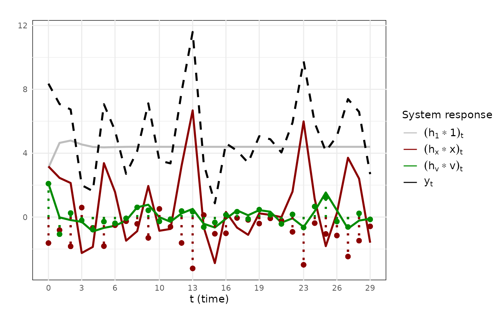
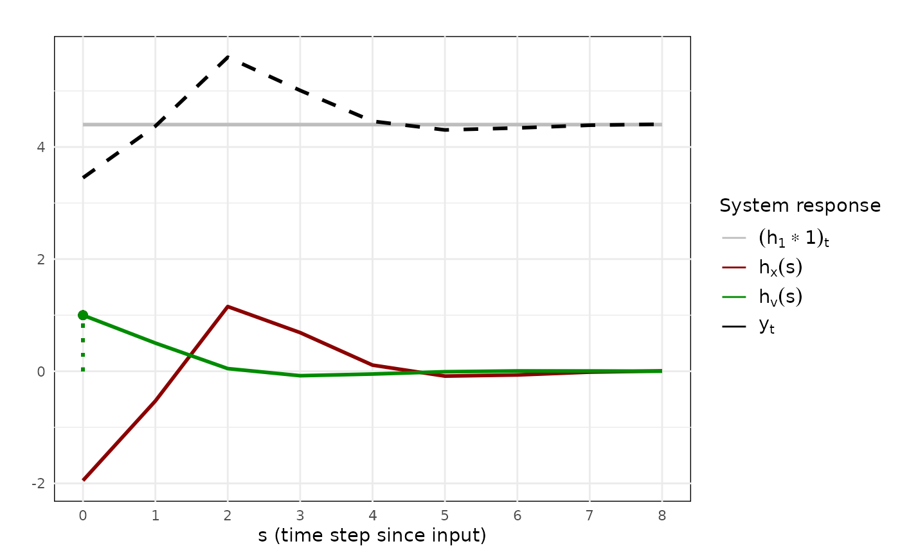

In this vignette, we discuss how the irf_empirical
function can be used to estimate a general
model and then generate the different types of system responses
discussed in the manuscript.
The irf_empirical function first fits a specific dynamic
regression model to the data using the lm function in R.
Then, the observed covariate values, the estimated innovations, and the
parameter estimates are passed to the irf_generator
function to calculate the responses needed for empirical trajectory
plots. Some technical details about initial innovations (Appendix A5 in
Ariens et al., submitted) are handled automatically.
Toy data
To illustrate the use of the irf_empirical function, we
first use the irf_generator to simulate some toy data.
These data are generated through the following ADL(2, 2):
where
and
In this simulation study, we assume that the system is currently in
equilibrium. The default burnin = TRUE need therefore not
be changed, but we display the argument in the code below for
clarity.
# Generate covariate and innovation values from a normal distribution
x <- rnorm(30, -1, 1)
v <- rnorm(30, 0, 0.6)
# Use irf_generator to generate some data for the specified ADL(2, 2) model
toy_data <- irf_generator(
intercept = 3,
ar_params = c(0.5, -0.2),
x_params = c(-2, 0.5, 1),
x = x,
innovations = v,
burnin = TRUE
)$irfThe column irf contains the model implied values for the
dependent variable
.
The covariate values are provided in the column x. These
are the only two columns we have available by measuring the criterion
variable and the covariate in practice. For illustrative purposes, we
create a new dataframe called observed_data containing the
time index and these two columns. We rename the dependent variable to
Y and the independent variable to X:
Arguments
The irf_empirical function has two main sets of
arguments. The first have to do with the data, while the second have to
do with the ADL model you would like to fit to your data.
Data
To fit an ADL model to data and calculate the system responses, one
first provides a dataframe containing the variables of interest. The
arguments data and cols allow one to specify
which columns in the dataset should be subject to analysis. The
dependent variable should be placed first and the covariate should come
second.
Model specification
The ADL(p, q) notation is used to specify the model. The argument
y_lags is used to specify how many AR effects are allowed
for, starting at the value
,
indicating only a single lag. The argument x_lags is used
to specify how many lagged covariate effects are allowed for, starting
at the value
,
indicating the presence of a contemporaneous effect
.
An intercept parameter will always be estimated.
Note that the defaults values specify neither y_lags nor
x_lags. In this case, irf_empirical will
estimate only an intercept, corresponding to an empty (mean) model.
Example
To fit the data-generating model back to the data, we supply the
irf_empirical function with the following arguments:
estimated_responses <- irf_empirical(
data = observed_data,
cols = c("Y", "X"),
y_lags = 2,
x_lags = 2
)The estimated_responses object is a list containing 5 elements.
-
fit: The raw output of thelmfit object. Note that estimates of the first innovations will not be returned by this fit object, because the initial values and were conditioned on for estimation; -
irf: A data.frame containing the estimated cumulative responses towards the input variables over the observation period. This output has the same format as the output of theirf_generatorfunction. The columnestimated_responses\$irf\$innovationscontains the full set of estimated innovations needed to construct the empirical trajectory plots; -
intercept: A numeric containing the estimate of the intercept parameter; -
x_params: A numeric vector containing the estimates of the covariate parameters. The first element will be , the second element will be , and so on. The list will be of dimension if lagged covariate parameters are allowed for and a contemporaneous effect is estimated; -
ar_params: A numeric vector containing the estimates of the AR parameters, again in order of increasing lag.
To construct an empirical trajectory plot, we simply call the
irf_plot function:
irf_plot(estimated_responses$irf)
Visualization of the impulse response function for the estimated ADL(2, 2) model. This model has been estimated on the provided data, leading to the estimated parameters , , and .
Estimated parameter values, hypothetical input vectors
The output of the irf_empirical function contains the
cumulative responses over the study period. Given that we have parameter
estimates available, it is straightforward to use the
irf_generator function to construct impulse response plots
or scaled impulse response plots. For example, if we wish to study the
behavior of the estimated model when provided with an impulse, we first
look at the estimates of the model:
estimated_responses$fit ##
## Call:
## stats::lm(formula = y ~ X__)
##
## Coefficients:
## (Intercept) X__ylag_1 X__ylag_2 X__xlag_0 X__xlag_1 X__xlag_2
## 3.0907 0.5027 -0.2053 -1.9491 0.4496 1.0204and then provide these estimates as parameters to the
irf_generator function:
# Extract the parameters of the estimated model
params <- estimated_responses$fit$coefficients
# Use irf_generator to generate the impulse response functions
result <- irf_generator(
intercept = params[1],
ar_params = params[2:3],
x_params = params[4:6],
x = c(1, 0, 0, 0, 0, 0, 0, 0, 0),
innovation = c(1, 0, 0, 0, 0, 0, 0, 0, 0)
)
# Visualize the results
irf_plot(result$irf)
Visualization of the impulse response function for the estimated ADL(2, 2) model.
Missing values
The irf_empirical function handles missing values
through listwise deletion. If missing data are present in the dataframe,
irf_empirical will currently default to returning estimated
impulse responses rather than estimated trajectories. If estimated
trajectories are nevertheless desired, one can download the development
branch of impulseR. Here,irf_empirical will reset the
calculation of the cumulative responses whenever missing values are
present. This is the same as calculating the estimated trajectories for
each block of missing data separately. Future versions of impulseR will
provide more flexibility with respect to missing data handling in the
irf_empirical function.
If custom methods of estimation are used where missing data are
imputed, the parameter estimates and estimated innovations can be
supplied to the irf_generator function directly to produce
estimated trajectory plots.
The burnin argument
The irf_empirical first fits the specified model to data
and only afterwards does it calculate the system responses. When
proceeding from the estimation to the calculation step, the
irf_empirical function sets the burnin
argument to FALSE. Otherwise, there will be slight
discrepancies between
(the observed values of the dependent variable in the data) and
(the model-implied total response). This section illustrates why the
burnin argument is set to FALSE by default
when estimated trajectory plots are desired.
We call the irf_empirical function to our empirical data
twice, once with the default value of the argument
burnin = FALSE, and one with the default overridden.
# Fit the data and do not burn in the intercept response (default behavior)
est_raw <- irf_empirical(
observed_data,
cols = c("Y", "X"),
y_lags = 2,
x_lags = 2
)
# Fit the data and burn in the intercept response (not recommended for empirical trajectory plots)
est_burned <- irf_empirical(
observed_data,
cols = c("Y", "X"),
y_lags = 2,
x_lags = 2,
burnin = TRUE
)
# Observed data
head(observed_data, n = 10)## Y X
## 1 8.353830 -1.6264538
## 2 7.077586 -0.8163567
## 3 6.737255 -1.8356286
## 4 1.996095 0.5952808
## 5 1.627357 -0.6704922
## 6 7.066434 -1.8204684
## 7 5.415587 -0.5125709
## 8 2.705515 -0.2616753
## 9 4.134684 -0.4242186
## 10 7.121137 -1.3053884
# System responses when burnin = FALSE
head(est_raw$irf, n = 10)## time irf irf_intercept irf_x irf_v x innovations
## 1 0 8.353830 3.090664 3.1701685 2.09299763 -1.6264538 2.0929976
## 2 1 7.077586 4.644407 2.4536467 -0.02046782 -0.8163567 -1.0726629
## 3 2 6.737255 4.791035 2.1338766 -0.18765677 -1.8356286 0.2522974
## 4 3 1.996095 4.545786 -2.2495606 -0.30013020 0.5952808 -0.2099929
## 5 4 1.627357 4.392392 -1.8675700 -0.89746552 -0.6704922 -0.7851070
## 6 5 7.066434 4.365625 3.3772533 -0.67644400 -1.8204684 -0.2868814
## 7 6 5.415587 4.383658 1.5776060 -0.54567656 -0.5125709 -0.3898513
## 8 7 2.705515 4.398218 -1.4782742 -0.21442876 -0.2616753 -0.0789703
## 9 8 4.134684 4.401836 -0.8808544 0.61370227 -0.4242186 0.6094801
## 10 9 7.121137 4.400666 1.9472678 0.77320265 -1.3053884 0.4206619
# System responses when burnin = TRUE
head(est_burned$irf, n = 10)## time irf irf_intercept irf_x irf_v x innovations
## 1 0 9.662280 4.399114 3.1701685 2.09299763 -1.6264538 2.0929976
## 2 1 6.832292 4.399114 2.4536467 -0.02046782 -0.8163567 -1.0726629
## 3 2 6.345333 4.399114 2.1338766 -0.18765677 -1.8356286 0.2522974
## 4 3 1.849423 4.399114 -2.2495606 -0.30013020 0.5952808 -0.2099929
## 5 4 1.634078 4.399114 -1.8675700 -0.89746552 -0.6704922 -0.7851070
## 6 5 7.099923 4.399114 3.3772533 -0.67644400 -1.8204684 -0.2868814
## 7 6 5.431043 4.399114 1.5776060 -0.54567656 -0.5125709 -0.3898513
## 8 7 2.706411 4.399114 -1.4782742 -0.21442876 -0.2616753 -0.0789703
## 9 8 4.131961 4.399114 -0.8808544 0.61370227 -0.4242186 0.6094801
## 10 9 7.119584 4.399114 1.9472678 0.77320265 -1.3053884 0.4206619The column Y in the data.frame
observed_data contains the observed values for the
criterion variable,
.
The column irf in est_raw contains the model
implied values
if the intercept response is not burned in. The column irf
in est_burned contains the model implied values
if the intercept response is burned in.
Even though in reality the data were generated with the intercept
response burned in, there are slight discrepancies between the model
implied values
and the values observed in the data,
,
when the burnin argument is set to TRUE,
though only for the first few time points. In comparison, the default
burnin = FALSE option provides a truthful decomposition of
the observed data into the estimated system responses.